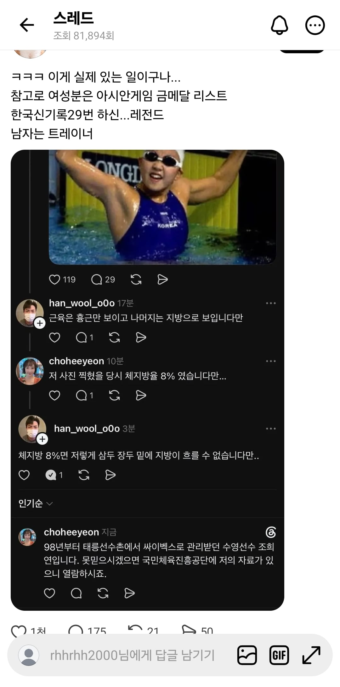
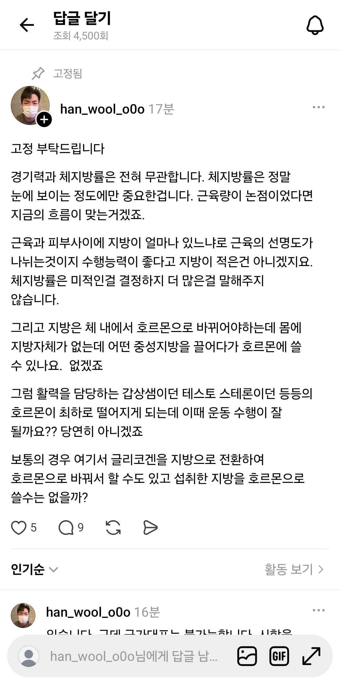
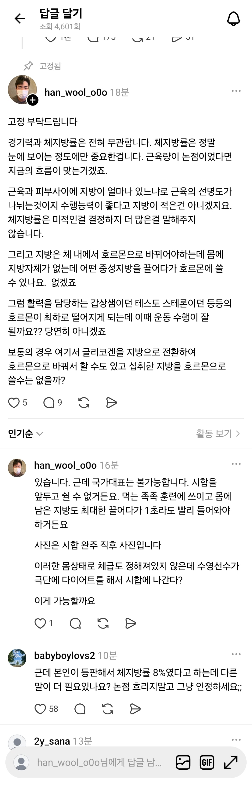
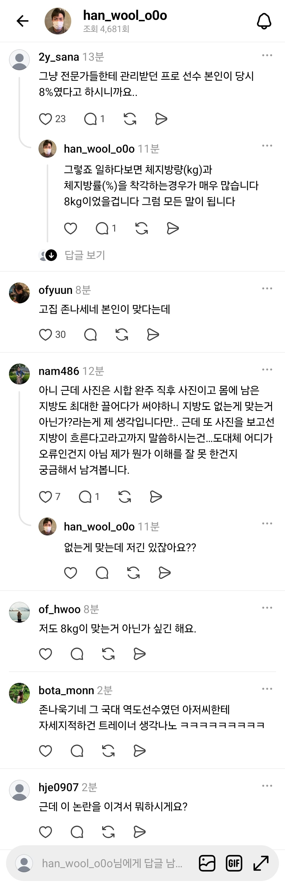

헬린이 운알못이라 무슨말하는진 모르겠는데
뭔가 말싸움이 커지는느낌




헬린이 운알못이라 무슨말하는진 모르겠는데
뭔가 말싸움이 커지는느낌
여자가 금메달리스트인걸 모를때 남자 트레이너가 흉근 말고는 지방이다라고 갑자기 선시비를 건게 걍 전형적인 헬스인 특유의 허세 모먼트였는데(며칠전의 역도 할아버지한테 자세 훈수두는 헬스쟁이들 댓글처럼) 여자 본인이 등판해서 8%드립 치니까 이상해져버렸네
걍 봐도 흉근 말고도 광배랑 삼두 다 보이는데 그리고 애초에 프로급 선수한테 지방만 보인다 어쩌고는 걍 웃기지
근데 괜히 8%드립을 쳐가지고 아마 선수가 수치를 헷갈렸겠지 저 정도는 보디빌더 여자 선수들이나 나오는 수준이지 올림픽 나가서 기능적으로 경쟁해야 하는 사람에게 맞는 체지방은 아니긴 한 듯
옛날에 다큐에서 박태환 선수 랫풀다운 하는 거 보고 어디 운동이냐 물어보니까 어깨 운동이라 답한 것처럼 운동 선수는 본인 종목 운동을 잘하는 거지 결코 지식인이 아님
무식해도 걍 잘하면 되는 게 선수들임
ㅋㅋㅋ아진짜?
박태환은 사실 약물논란으로 싫어하긴하는데
웃기긴하네
나도 처음엔 트레이너가 잘못했나싶었는데 8%면 팔을 돌릴수있는 유연성이 안나올텐데
보디빌딩 시합나가는 여자들이 체지 8정도 되지 않나 그 사람들 몸 보고 다시 저 사진 봐보셈 ㅋㅋ
여자8은 말이안되지안나